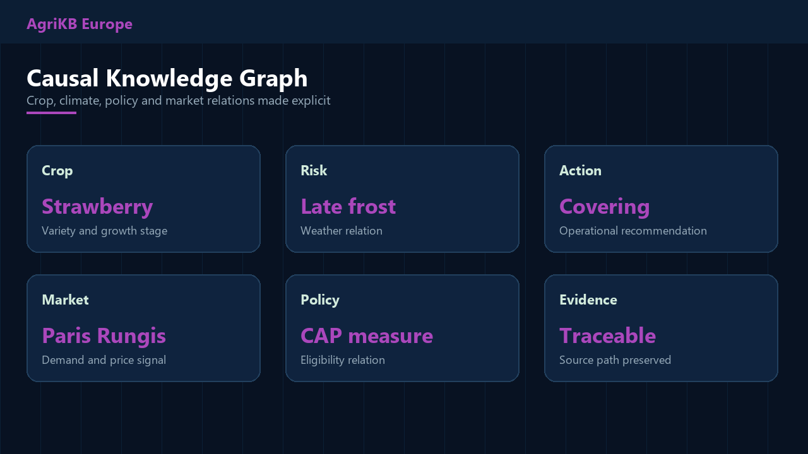
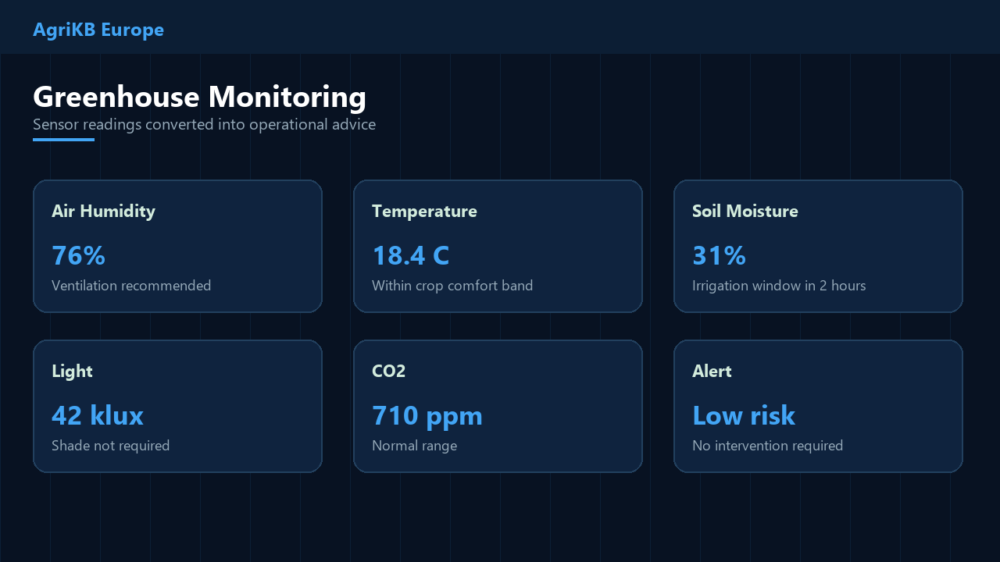
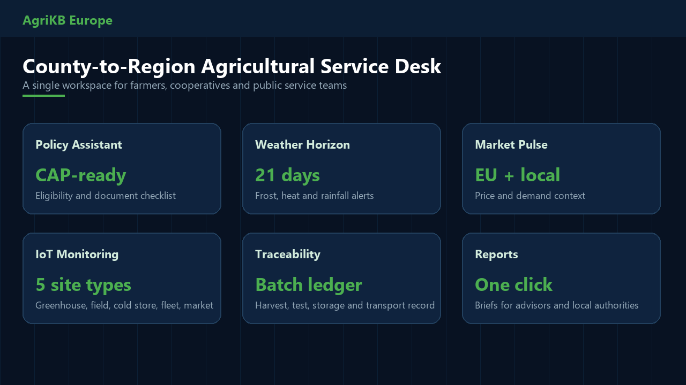
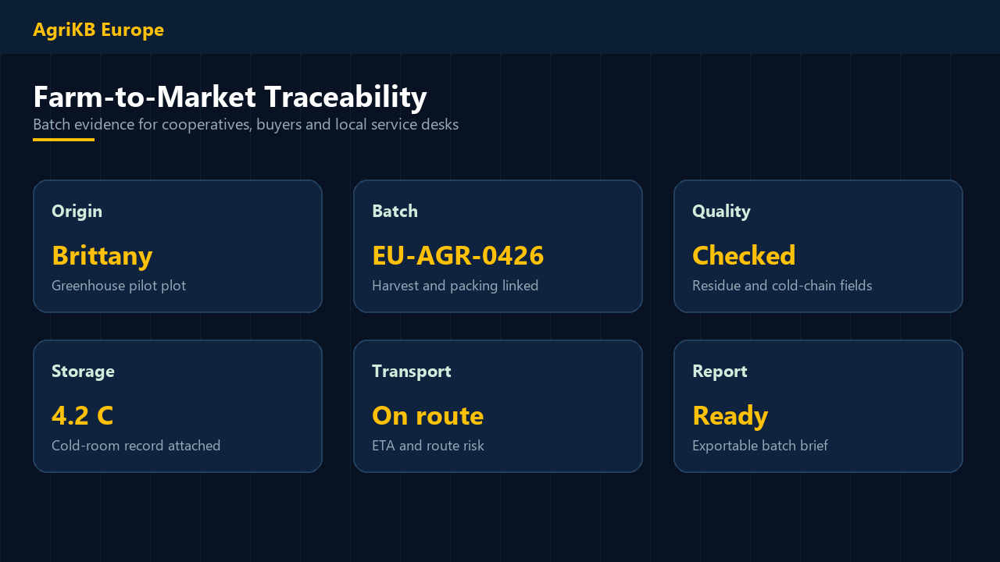
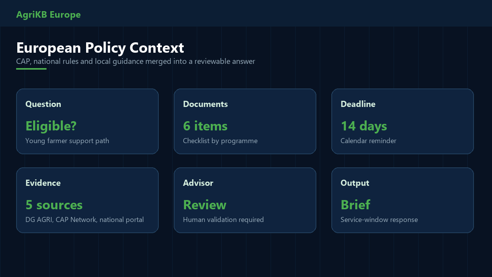
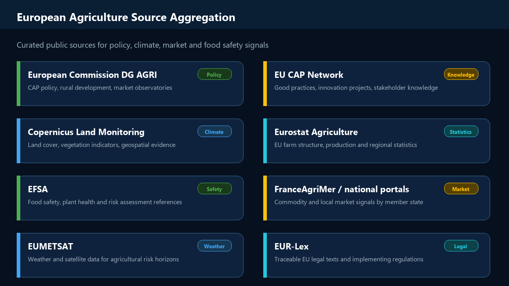

AgriKB Europe
Intelligent Agriculture Service Hub
A pre-product brief for regional farm advisory services, cooperatives and data-enabled agricultural pilots.
Policy services x specialty crops x weather and market intelligence x IoT field data
Project Navigation
Three Information Gaps for Modern Farmers
Policy Is Fragmented
CAP measures, national schemes and local guidance are hard to connect to a specific farm case.
Common painEligibility and documents are unclear.Markets Are Fragmented
Price signals, buyer demand and logistics constraints arrive from different channels.
Common painHarvest and sales timing is reactive.Advice Is Hard to Scale
Expert agricultural knowledge is scarce, local and difficult to preserve as reusable guidance.
Common painExperience stays informal.Three Forces Are Converging
Policy Pressure
CAP implementation, climate adaptation and digital public services require better regional evidence.
Technology Readiness
Knowledge graphs, GraphRAG, sensors and satellite data can now be composed into practical workflows.
Operational Need
Farmers and advisory teams need fast, reviewable answers tied to local crops and field conditions.
AgriKB Europe: A Digital Co-pilot for Regional Agriculture
One natural-language question becomes a structured answer with policy context, weather risk, market signal, IoT evidence and a reviewable action list.
Seven Modules Cover the Operating Loop
Eligibility, documents, deadlines
Prices, demand, channels
21-day risk horizon
Cold-chain and logistics risk
Batch evidence and QA fields
IoT and field observations
GraphRAG evidence paths
Knowledge Foundation: Four-domain Ontology
Crop Domain
Variety, growth stage, suitability, diseases and operations.
Disease Domain
Symptoms, causes, prevention rules and advisory notes.
Field-work Domain
Seasonal calendar, procedures and best-practice templates.
Policy Domain
CAP measures, eligibility, documents and deadline logic.
Designed for EU public sources plus local regional material.
Knowledge Graph: Entity, Relation, Attribute
Entity Modeling
Crops, diseases, field operations, policies and market signals are aligned into shared concepts.
Relation Extraction
Risk, cause, eligibility, timing and logistics relations connect across domains.

GraphRAG: Retrieval With Evidence Paths
Ordinary RAG risk
Semantic drift, weak source grounding and limited multi-hop reasoning.
GraphRAG value
Answers are constrained by ontology paths and can show the evidence chain.
Recursive Reasoning for Complex Farm Questions
L1 Intent
Identify crop, place, season, user role and decision objective.
L2 Retrieval
Break the question into policy, climate, market and field-data sub-questions.
L3 Output
Return an action list, caveats, evidence links and review status.
Experience Loop: From Use to Reusable Guidance
Each advisory interaction can become structured knowledge: what was asked, what evidence was used, what action was taken and what result followed.
Technical Positioning
| Dimension | Generic AI | Traditional Systems | AgriKB Europe |
|---|---|---|---|
| Reviewability | Answer needs checking | Rules are static | Evidence paths preserved |
| Domain depth | General knowledge | Limited local context | Agricultural ontology + graph |
| Data fusion | Text-first | Module silos | Policy + market + weather + IoT |
| Traceability | Black-box output | Opaque rules | Source and reasoning chain visible |
IoT Architecture: Field Data Into Advisory Workflows
Crop Monitoring: From Sensors to Action

Operational conversion
Temperature, humidity, soil moisture and light readings are interpreted against crop stage and weather horizon.
Advisory output
Ventilation, irrigation, harvesting, storage and disease-risk reminders.
Five Site Types, One Data Loop
crop monitoring
vegetation and pest risk
temperature and batch status
route and cold chain
price and demand signal
All site signals feed one reasoning layer for reviewable operational suggestions.
Product Mockup: Seven Modules in One Workspace

Product Mockup: Greenhouse and Traceability Views

Product Mockup: Policy AI and European Source Aggregation


AgriKB in 60 Seconds
The GitHub version uses static assets only, so it can be published directly through GitHub Pages.
Initial Product Boundary: Build a Verifiable Pilot
Policy service desk
Import CAP, national and regional guidance into a local answer workflow.
Specialty crop pilot
Start with strawberry, vineyard, greenhouse vegetable or rice-region scenarios.
IoT field loop
Connect 1-3 demonstration sites and keep handling records.
No exaggerated claims
Focus on service scenarios, reviewability and measurable pilot outputs.
Human review remains required
Regulatory, pesticide, disease and funding decisions must be confirmed by qualified local staff.
Users and Early Outputs
Farmers
Weather, market, harvest and policy reminders.
Cooperatives
Member service, field records and IoT monitoring.
Authorities
Policy access, consultation logs and regional dashboards.
Policy consistency
Reusable answers with document checklists.
Operational advice
Weather, market and field-data recommendations.
Pilot record
Queries, alerts, actions, batch fields and review notes.
Pilot Build Rhythm
Acceptance check: starts reliably, answers with sources, gives reminders, exports reviewable records.
Differentiation and Risk Control
Complement existing tools
AgriKB does not replace official portals, advisors or IoT platforms. It connects them into one workflow.
Core difference
Regional knowledge base + reviewable evidence paths + field data + service records.
Risk controls
- Source version and timestamp tracking.
- Human review for regulated advice.
- Sensor calibration and anomaly flags.
- Minimal additional data-entry burden.
European Pilot Deployment Pattern
Practical Pilot Rollout
Operations and Development Setup
Agile delivery
Two-week iterations for policy, market, weather, IoT and reporting modules.
Deployment
Static front-end, local knowledge base, portable runtime and service-desk configuration.
Required roles
Agronomy advisor, IoT engineer, front-end engineer and product/service designer.
Security
Local deployment option, permission tiers, private-data handling and backup plan.
Team: Technology x Agriculture x Product
Technical Lead
AI, knowledge graph and GraphRAG engine.
AI Engineer
RAG, reasoning workflow and evaluation.
Agronomy Expert
Ontology validation and field-practice review.
Product Designer
Service-desk workflow and operator experience.
Three-stage Development Roadmap
Initial Deliverables
Data pack
Policy sources, crop profiles, common questions and traceability fields.
Software pack
GitHub Pages-ready site, static assets and deployment notes.
Training pack
Service-desk guide, administrator checklist and monthly review template.
Start With One Real Scenario
Make Smart Agriculture Service Work in Practice
Serve policy consultation, specialty crops and field data first. Then scale the regional capability through evidence and review.
AgriKB Europe | 2026